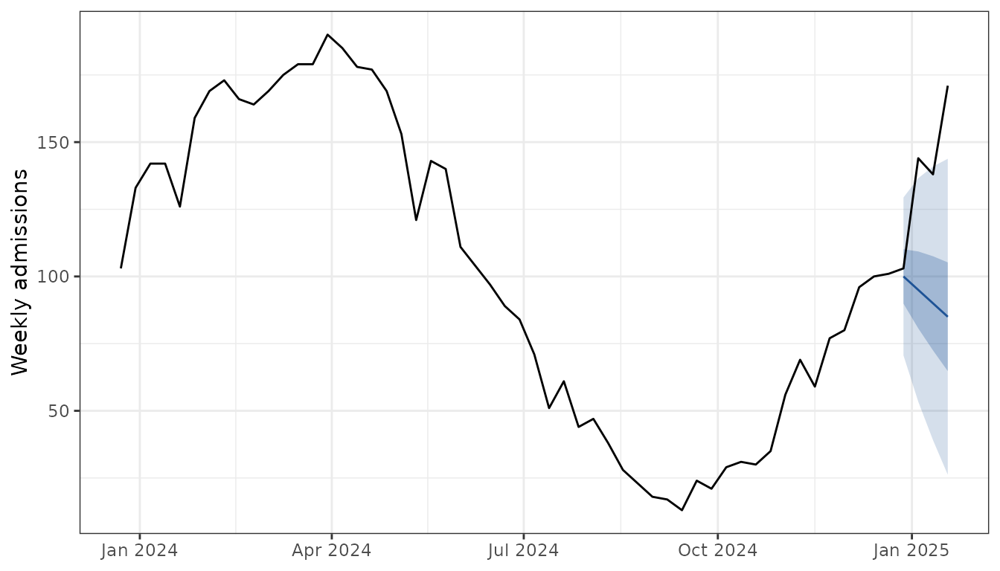
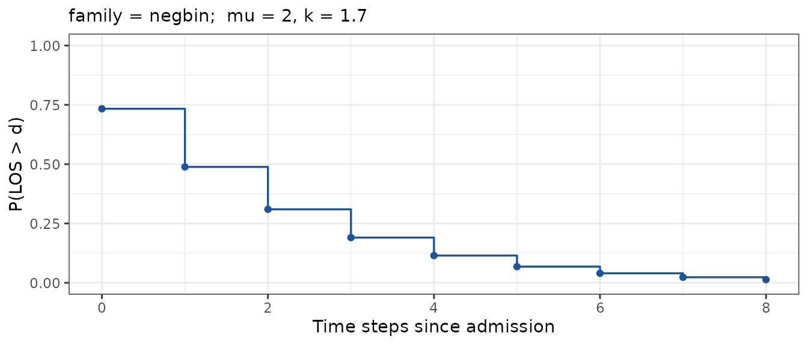
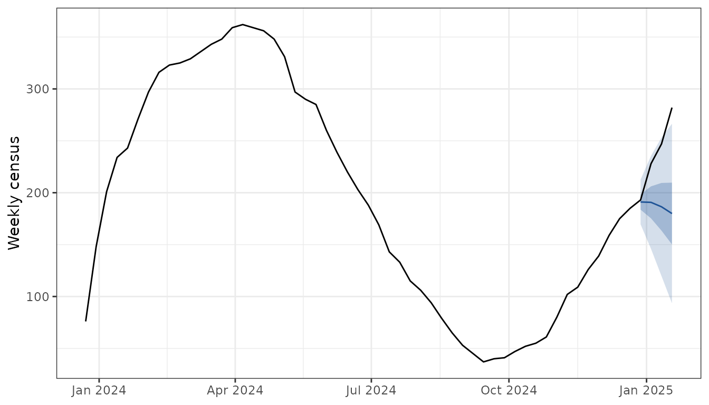
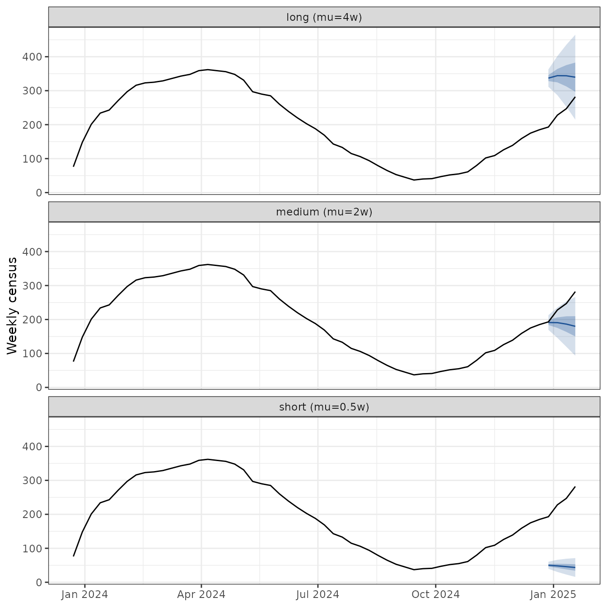

Public health forecasting hubs (FluSight, COVIDhub, RSVhub) publish
admission forecasts. Hospital operations plan around
the census: the number of patients in hospital on a
given day. censcast turns one into the other by convolving
admissions with a length of stay (LOS) distribution:
What the hubverse gives you
Two tibbles in standard hubverse shape, both shipped with the package as toy data for this vignette:
-
admission_history: observed weekly admissions, as you would pull from a hub’s target time series (hubData::connect_target_timeseries()). -
admission_forecast: the next 4 weeks of admission quantile forecasts, as you would pull from a hub (hubData::connect_hub() |> collect_hub()).
Overlaying the two on one axis shows what a hub publishes: history in black, forecast fan in blue.

censcast gives two ways to turn this into a
census forecast, depending on whether you have past census
data.
1. With past census data: fit_los()
Hubs publish admissions truth, not census truth, so the census series
has to come from your own records. The package ships a toy version,
census_history, generated by convolving
admission_history with a known LOS, so it pairs row for row
with the admission series.
fit_los() recovers the LOS by deconvolving the paired
admission and census time series:
fit <- fit_los(
data = inner_join(
admission_history |> select(target_end_date, admissions = observation),
census_history |> select(target_end_date, census = observation),
by = "target_end_date"
),
family = "negbin",
max_stay = 8
)
fit
#> <los_fit> family=negbin mu=2, k=1.7 P(LOS>8) = 0.0134plot(fit) shows the recovered survival curve:
plot(fit)
Drop the fit into fcast_census() to get a census
forecast, then overlay the observed census to check the alignment:
census_fit <- fcast_census(admission_forecast, fit, admission_history)
plot_fan(census_fit, truth = census_history) +
labs(y = "Weekly census")
2. Without past census data: spec_los()
If no census data is available, set LOS from literature priors. Running several priors makes the assumption visible. Short stays put weight on recent admissions; long stays smooth across many weeks:
los_priors <- list(
"short (mu=0.5w)" = spec_los("negbin", mu = 0.5, k = 1.7, max_stay = 8),
"medium (mu=2w)" = spec_los("negbin", mu = 2, k = 1.7, max_stay = 8),
"long (mu=4w)" = spec_los("negbin", mu = 4, k = 1.7, max_stay = 8)
)
census_priors <- imap(los_priors, \(s, name) {
fcast_census(admission_forecast, s, admission_history) |>
mutate(los = name)
}) |>
bind_rows()
# Replicate truth across facets so each panel gets the black line.
truth_faceted <- imap(los_priors, \(s, name) {
mutate(census_history, los = name)
}) |>
bind_rows()
plot_fan(census_priors, truth = truth_faceted) +
facet_wrap(~los, ncol = 1) +
labs(y = "Weekly census")
plot_fan() treats any unrecognised column as a
trajectory grouper, so the user added los column needs no
configuration.
3. Scoring
score_census() returns weighted interval score (WIS) per
quantile via scoringutils. Pair each forecast with the
truth and compare mean WIS across LOS priors:
imap(los_priors, \(s, name) {
fcast_census(admission_forecast, s, admission_history) |>
score_census(census_truth = census_history) |>
mutate(los = name)
}) |>
bind_rows() |>
summarise(mean_wis = mean(wis), .by = los) |>
arrange(mean_wis)
#> los mean_wis
#> 1 medium (mu=2w) 29.69379
#> 2 long (mu=4w) 76.89364
#> 3 short (mu=0.5w) 181.69018The “medium” prior matches the LOS used to generate
census_history (negbin(mu = 2, k = 1.7)), so
it wins. In a real workflow, lean on fit_los() when census
data exists and use spec_los() priors as a sensitivity
check.
Plugging in a real hub
The toy datasets above are the only difference between this vignette and a production workflow. Swap them for live hub data:
library(hubData)
admission_forecast <- connect_hub(s3_bucket("cdcepi-flusight-forecast-hub")) |>
dplyr::filter(
target == "wk inc flu hosp",
output_type == "quantile",
model_id == "FluSight-ensemble"
) |>
collect_hub()
admission_history <- connect_target_timeseries(
s3_bucket("cdcepi-flusight-forecast-hub")
) |>
dplyr::filter(target == "wk inc flu hosp") |>
dplyr::collect()census_history (or its real equivalent) you supply from
your own records.
API
| Function | Role |
|---|---|
spec_los() |
LOS survival vector from priors. |
fit_los() |
LOS survival vector fit from (admissions, census). |
fcast_census() |
Convolve admissions × LOS → census, hubverse shape in/out. |
plot_fan() |
Quantile fan chart, returns a ggplot. |
score_census() |
Score census forecast against truth via
scoringutils. |